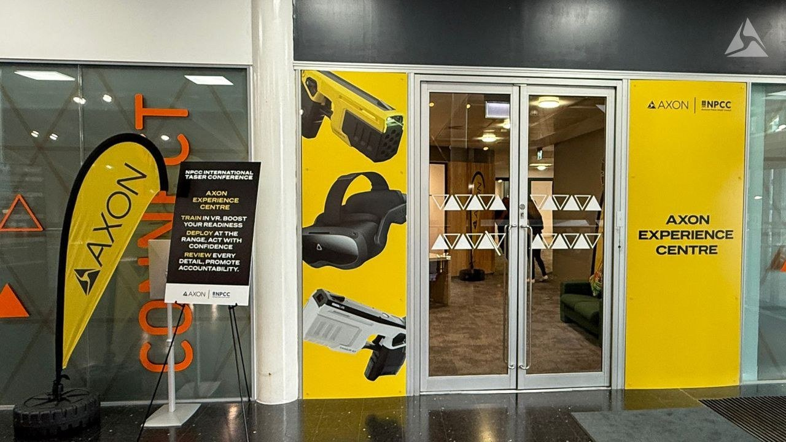

The Category Problem: The customer saw a hardware asset. The ecosystem value was completely invisible.
Repositioning physical hardware into shared cloud and software platform networks.
Officers saw a gun. The platform behind it was invisible.
Across UK policing, TASER was read as a weapon — a hardware device, and nothing more. The real value sat in the software platform behind it: the data, evidence and audit trail that build accountability. That value wasn't reaching buyers, so the differentiation was being left on the table at exactly the moment forces were weighing a move off legacy systems (TASER 7, X2).
My task: reposition TASER 10 from a hardware refresh into a platform-and-accountability case, and give the wider Axon VR training story a single, coherent narrative that buyers and officers could actually trust.
The Solution Framework: Bundling multi-product capabilities into a single, intuitive 3-step value path.
I built a fused TASER 10 + Axon VR solution story and used the Train · Deploy · Analyse framework as its spine — a messaging hierarchy that gave the platform value a language officers understood. I also wrote the foundational sales and messaging assets, including every booth and experience-centre tagline. The whole story went live as a full Axon Experience Centre at the NPCC International TASER Conference, where officers could understand the workflow hands-on, in a realistic environment.
Train
Axon VR positioned as readiness for the real TASER 10 — building muscle memory and confident handling before the field.
Deploy
The device in context — framed around officer and public safety, not just capability specs.
Analyse
The platform layer — data, evidence and audit reframed as the accountability case that justifies a force-wide transition.
The work, in the wild.


When selling complex technology, a major friction point is that buyers fail to see how hardware assets communicate with cloud data systems. To solve this for sales teams, I mapped out The Axon Network ecosystem diagram. This asset visually traces the complete data lifecycle—showing exactly how a physical field incident flows automatically into secure central database registries and court-ready evidence loops. By making the invisible platform visible, we successfully shifted the buyer's focus from a single device transaction to an entire institutional software ecosystem.